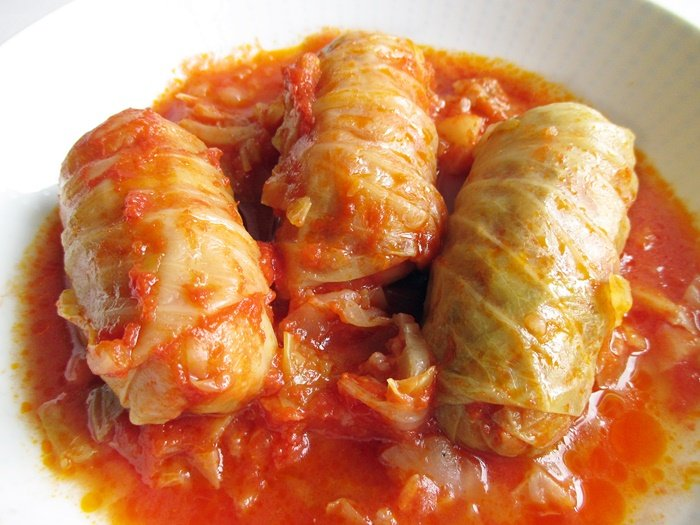

Stuffed cabbage rolls

Description
Winter is the season for hearty Hungarian dishes. Cabbage is a favorite winter food
that can be prepared in many delicious ways. Hungarian stuffed cabbage rolls are one
of the most popular classics and it usually makes the Christmas and New Year’s Eve
menus in most homes. Preparation varies according to region and family, people
prepare them not only on the stovetop, but also in the oven. Stuffed cabbage rolls
come in many variations, the filling can be ground beef, pork, the sauce can be
plain or tomato based and adding smoked meat and/or sausage will only enhance the
flavor. It is even better reheated.
Ingredients
- 1 small green cabbage head
- 1 kg sauerkraut 2.2 pounds
- 2 cups minced pork (or half pork, half beef)
- 1 whole egg
- 12-16 cabbage leaves boiled
- 2 cloves garlic minced
- 2 medium onions finely chopped
- 1/2 cup uncooked rice long grain
- 3 tbsp sweet paprika powder
- 1 teaspoon ground caraway seeds
- 2-6 bay leaves
- 1 teaspoon ground black pepper
- 2 tbsp vegetable oil or pork lard
- salt to taste
- 4 tbsp sour cream
- 1.5 tbsp all purpose flour
Steps
- Fill a large pot with water and bring it to a boil. Put the cabbage head in
the water and slowly boil for about 30-35 minutes. Take the cabbage out and
cool it. With a sharp knife carefully cut of 12-16 leaves without breaking them.
- In a medium pot, sauté the finely chopped onions in lard or vegetable oil
over low heat, stirring frequently, until translucent. Do not let them burn.
Salt lightly to help tenderize them. The onions should be cut into very, very
small pieces. Add a small amount of water, if necessary, to prevent sticking
to the pan.
- Remove the pot from the heat, add 3 tablespoons of sweet Hungarian paprika,
stir well. Go by the color, if it is pale, rather orange than red, add a bit
more paprika. Do not burn the paprika or it will become bitter.
- Combine the ground meat, egg, rice, garlic, half of the sautéed onions-paprika
mixture, ground black pepper, and salt to taste. Form medium-sized balls.
- Flatten the cabbage leaves or remove the thick stalks from the center.
Place 1 ball on each leaf, and roll it up firmly, folding the edges under.
- Place 1 ball on each leaf, and roll it up firmly, folding the edges under.
- Rinse the sauerkraut under running water and mix it with the second half of
the paprika-onion mixture, the ground caraway seeds, the bay leaf and the
flour. Spread half of it on the bottom of your pot. Place the cabbage rolls
on top and cover them with the remaining sauerkraut.
- Pour water over. The water should not cover the sauerkraut, but when you press
it with a wooden spoon, you should see the water.
- Cover with a lid and put it in the preheated oven (180°C/350F) and cook for
about 1.5 - 2 hours, until the sauerkraut is tender. You can also test the
meat filling, if the rice is tender, then it it done.
- Serve with sour cream.